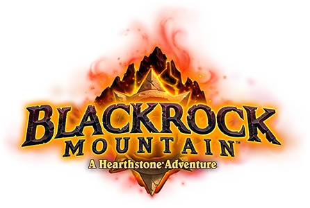
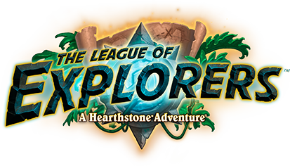
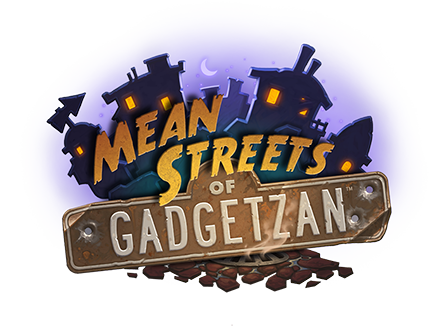
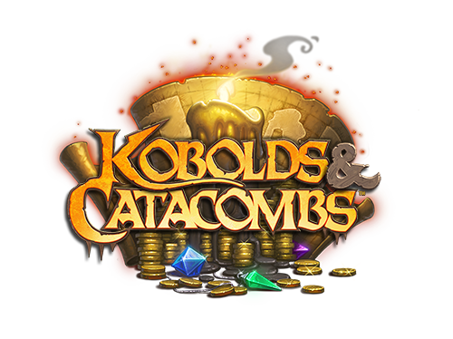

Maldición de Naxxramas
Ambientada en la necrópolis de la Plaga de Naxxramas, la Maldición de Naxxramas es una aventura de cinco alas, con cada ala representando una de las alas de la incursión de Naxxramas de World of Warcraft. La antigua necrópolis es la base de operaciones del poderoso archiich Kel'Thuzad y su anfitrión no-muerto. Curse of Naxxramas es la primera aventura de Hearthstone. Cuenta con un total de 30 cartas coleccionables, que se obtienen al derrotar a los jefes de Naxxramas.

Goblins vs Gnomos
Resuelve la vieja pregunta de quién es superior: el ingenio medido y cuidadoso de los Gnomos, o la marca sin límites de Goblin frente a inventos increíblemente volátiles y espectacularmente explosivos. Goblins vs Gnomes es la primera expansión de Hearthstone. Cuenta con 123 cartas coleccionables con un fuerte tema mecánico, presentando el tipo de minions Mech y Spare Parts.

Montaña Rocanegra
¡Así que saca a todos tus enemigos! Con Ragnaros el Señor del Fuego acurrucado en el vientre ígneo de Núcleo de Magma y Nefarian, hijo de Alamuerte, agazapado sobre Espira de Roca Negra, la escena en la Montaña Rocanegra está lista para una batalla ardiente. Montaña Rocanegra es la segunda aventura de Hearthstone. Cuenta con un total de 31 cartas coleccionables, que introducen el tipo Dragon Minion, que se obtienen al derrotar a los jefes de Rocanegra.

El Gran Torneo
Cuando el Rey Exánime y su Plaga no-muerta amenazaron al mundo, la Cruzada Argenta convocó a los héroes más poderosos de Azeroth para que demostraran su valía en un magnífico torneo. Caballeros de todas las razas se congregaron en Rasganorte, compitiendo por la gloria en batallas épicas contra temibles monstruos. Aunque el mal del Rey Exánime ha sido vencido, el Gran Torneo continúa ... la atmósfera competitiva es un poco más lúdica de lo que solía ser. El Grand Tournament es la segunda expansión de Hearthstone. Cuenta con 132 cartas coleccionables, presentando el tema Inspire.

Liga de Exploradores
El famoso cazador de tesoros Brann Bronzebeard está buscando héroes en todo el mundo para unirse a su alegre banda de intrépidos arqueólogos de acción. Su próxima aventura? Descubre las piezas del Staff of Origination, un artefacto antiguo invaluable. Pero ten cuidado, ¡no eres el único que está en la caza! League of Explorers es la tercera aventura de Hearthstone. Cuenta con un total de 45 cartas coleccionables, que se obtienen al derrotar a los jefes de Uldaman.

Susurros de los Dioses Antiguos
Durante innumerables milenios, los Dioses Antiguos han dormido. Ahora, el momento de su despertar se acerca; ¡Su influencia maligna se ha arrastrado hasta la taberna! ¿Puedes sentir tus tarjetas temblar en sus cubiertas a medida que la corrupción se extiende? ¡Algunos de tus viejos amigos ya han crecido con masas de tentáculos y una cantidad increíble de globos oculares! Susurros de los Dioses Antiguos es la tercera expansión de Hearthstone. Cuenta con 134 tarjetas coleccionables, presentando el comienzo de estándar.

Una Noche en Karazhan
Karazhan, durante mucho tiempo un potente nexo de energías arcanas, está a punto de convertirse en el punto focal de un tipo muy diferente de fuerza cósmica. El mago Medivh ha utilizado toda la magia a su disposición para organizar la fiesta más fastuosa y extravagante de todos los tiempos. Una noche en Karazhan es la cuarta aventura de Hearthstone. Cuenta con un total de 45 cartas coleccionables, que se obtienen al derrotar a los jefes de Karazhan.

Mafias de Gadgetzan
La pandilla conocida como Grimy Goons, la organización secreta conocida como Kabal y el sombrío Jade Lotus; todos quieren control sobre Gadgetzan! ¿Quién prevalecerá en las batallas? ¡Nadie sabe! ¿Y a quién te unirás? Haga su elección, pero tenga en cuenta! ¡Las otras pandillas no estarán felices! Mean Streets of Gadgetzan es la cuarta expansión de Hearthstone. Cuenta con 132 cartas coleccionables, presentando las cartas de tres clases, una para cada familia criminal de Gadgetzan.

Viaje a Un'Goro
Viaja a las selvas prohibidas del Cráter de Un'Goro, donde las criaturas primordiales de los albores del tiempo deambulan. Aquí, dinosaurios gigantes infundidos con crudo poder mágico cazan sin piedad a sus presas, abundan la fauna y la flora prehistóricas, y los elementales desencadenados se vuelven salvajes con la magia primitiva. ¡Prepara tus mazos para la expedición de tu vida! Viaje a Un'Goro es la quinta expansión de Hearthstone. Cuenta con 135 cartas coleccionables, intruducción de la mecánica de Adapt, tipo de carta Quest y Elementales.

Caballeros del Trono Helado
Un viento helado aúlla fuera de las paredes de la posada, pero el escalofrío que siente al trepar por la columna vertebral tiene poco que ver con el frío. Ningún mazo está a salvo de la influencia malvada del Rey Exánime; incluso los más acérrimos campeones de la Luz se han convertido en malvados Caballeros de la Muerte. Como los agentes del Azote no-muerto plagan la tierra, te corresponde a ti reunir tus cartas, enfrentar estas viles abominaciones, y volver sus poderes oscuros contra ellos. Caballeros del Trono Helado es la sexta expansión de Hearthstone. Cuenta con 135 cartas coleccionables, intrudadas cartas de héroe, un nuevo tipo que reemplaza al Poder del Héroe original y la mecánica de Robo de vida.

Kobolds Y Catacumbas
Atraídos por los cuentos de riquezas incalculables, has reunido a un grupo de audaces aventureros para encontrar fortuna en las catacumbas. Ahora, las sombras bailan mientras tus antorchas parpadean y tú desciendes a las minas. En ese momento, una ráfaga de viento apaga tu luz. En la oscuridad repentina, se ve un débil resplandor, acercándose. Un cacareo demasiado familiar resuena en la penumbra "¡NO tomes velas!". Kobolds and Catacombs es la séptima expansión de Hearthstone. Cuenta con 135 cartas coleccionables, presentando la mecánica Reclutar, un arma legendaria para cada clase, igual que la mazmorra.